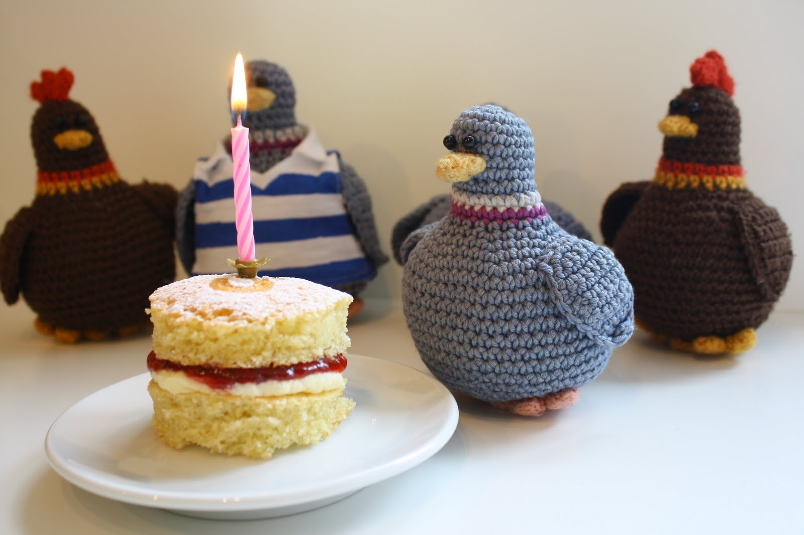
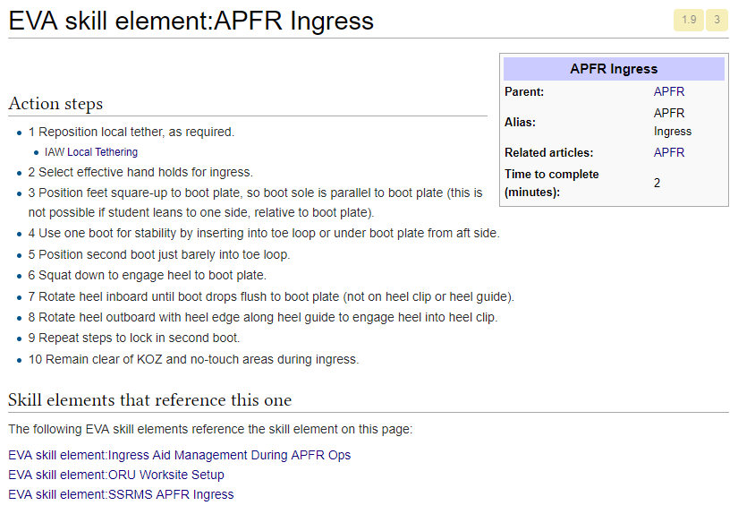
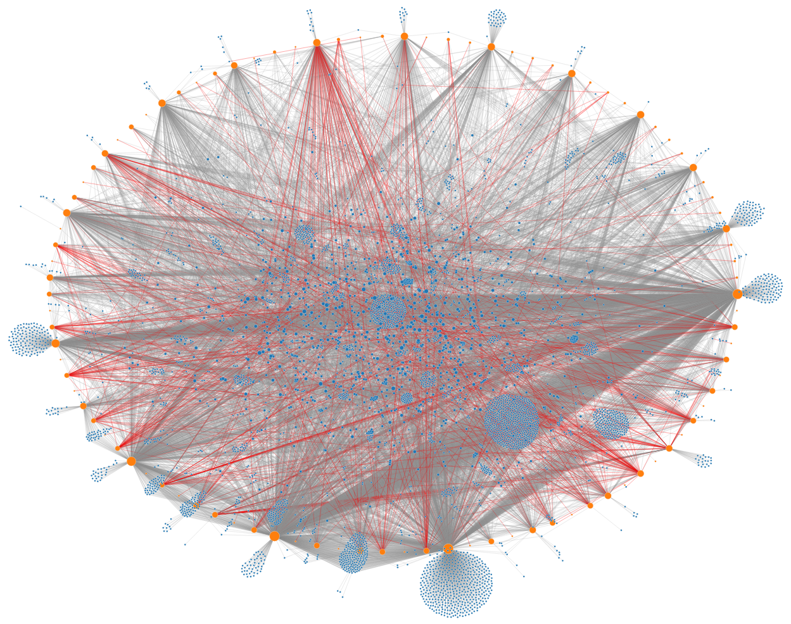
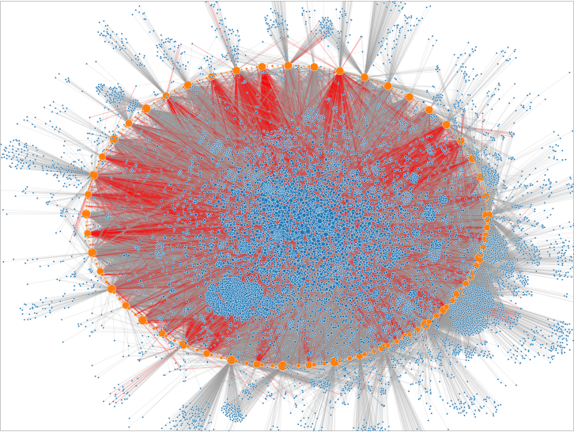
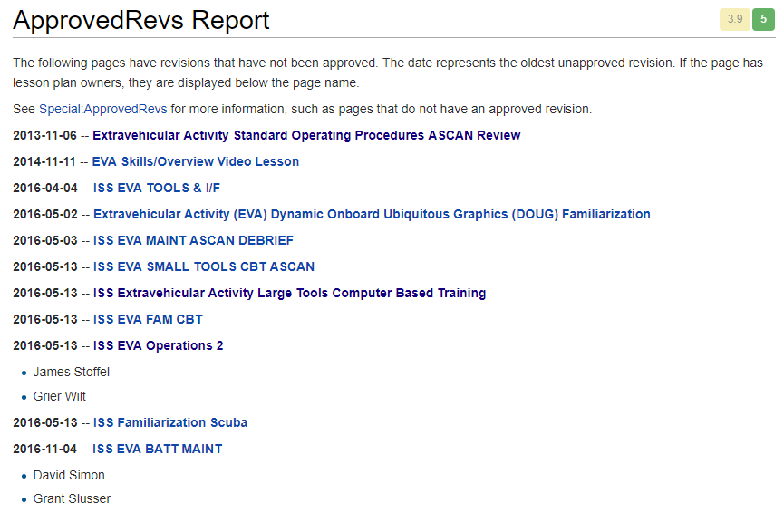
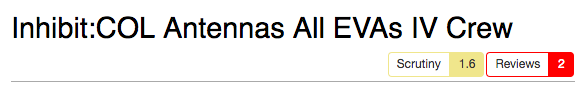
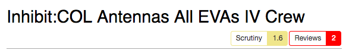
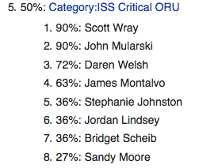
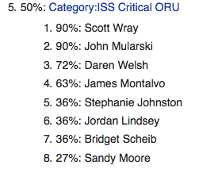

Increasing the Awesome
Here's to engineering
Increasing the Awesome
Daren Welsh
on behalf of the growing NASA JSC wiki community
but before there was awesome ...
there was
Weeping and gnashing of teeth
after about 6 years ...
in 2011
the EVA wiki was born
Year 1
building critical mass
History of the EVA Wiki
Meeting Minutes
& Group Communication
& Group Communication
Year 5
Everyone gets a wiki!
Year 5
link to 5 Year Wikiversary
Users per month across all wikis

but we didn't have a
Digital strategy
NASA Semantic Wikis

Wait ... I thought we were trying to reduce the data silos
Merging Wikis
Restructure based on vehicles (which should be our natural user group division)
NASA ties to the MediaWiki Community
- Events
- Conferences
- Hackathon
- WMF Developer Summit
NASA ties to the MediaWiki Community
- Events
- People
- Developers
- New wikipedians
- WMF donors
NASA ties to the MediaWiki Community
- Events
- People
- Software
- Meza - wiki server installer/configurator
- Custom extensions
- Existing extensions
- NASA integrations
Meza
NASA Integrations
- Imagery Online
- Inventory Management System
- Drawings Database
- Flight Rules
- Operational Constraints (+bot)
- MCC Gateway (+bot soon)
Slack bots
- User rights
- New pages
- Server performance
- OCADbot
EVA Skills Training Matrix

NBL Run Objective Example

EVA Skill Example
Does anyone care?
Wiki Accountability & Culture Shift
Pending Reviews

Diff View

Watch Suggestions

How well are we watching pages?

Before Watch Analytics

After Watch Analytics (2015)
March 2018
Approved Revs

Approved Revs Report
We have so much more
Page Scores
 

Comparing Timeliness of Reviewers

Comparing Contributions of Reviewers

Motivate Me
- Doc-a-thon
- Wiki Quickie
- Gamification?
Comparing Contributions of Reviewers

User Classification

User History

User Similarity Matching
 

Wiki Diversification

Evolution of a page